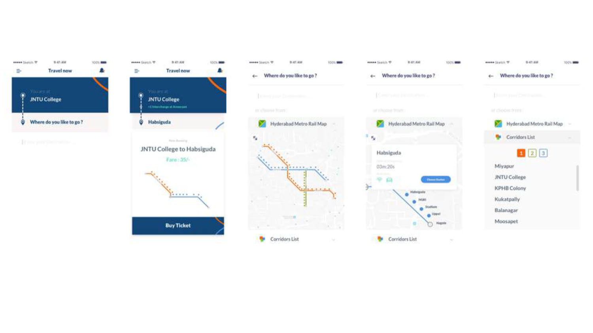
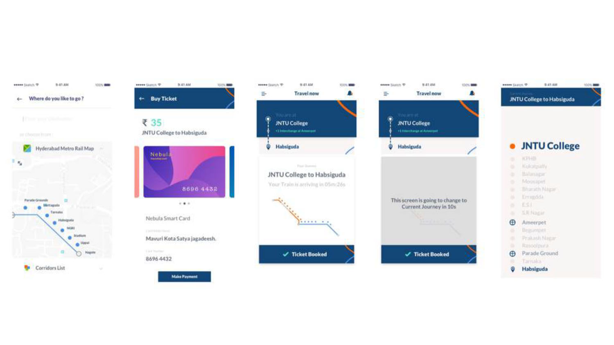

Summary
Travelling by Metro rail is one of the fastest modes of Transportation within a city.
Major cities like Hyderabad, Chennai, Delhi etc are employing Metro Rail
Transportation. Booking a ticket and travelling to a destination is the primary
concern of any passenger who enters the station. I wanted to address this concern by
improving the overall experience of the passenger.
Why
Last month I travelled to Hyderabad where I had to take a Metro Train to reach
Habsiguda from JNTU College. At the JNTU station, I took a ticket to Habsiguda and
later I was asked to give Feedback about the system. These 2 processes made me
miss my train and wait for the next one. A mobile application which allows me to
book a ticket would have saved my time.
Challenges
The process of getting a ticket from the counter at a station takes a lot of time.
Passengers do not have any guidance on where to interchange.
I’ve recorded only a few of the challenges for this version. New challenges will be
addressed in the next phase.
Goals & Objectives
To book a ticket from a mobile app directly and save time.
Process
I started by gathering the map details, station names and illustrated a mapped network
for the mobile application. After getting the details I started doing the wireframes.
The journey of ticket booking starts from the boarding station and selecting the
destination to book the ticket.
The user journey of booking a ticket involves payment through a smart card or any
other available payment methods.
The user can choose from either a rail map or a list of the stations available.
Solution
I designed a flow for the above-mentioned goals which involves booking a ticket
from a mobile app.
The following screens show the flow of ticket booking


Thanks for your time for making till the end.